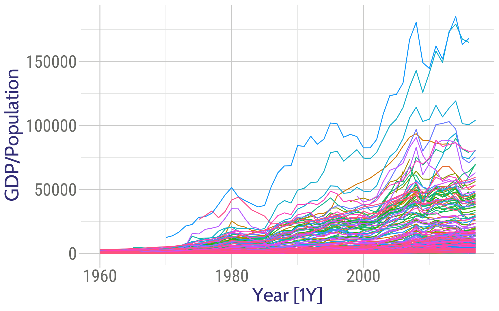
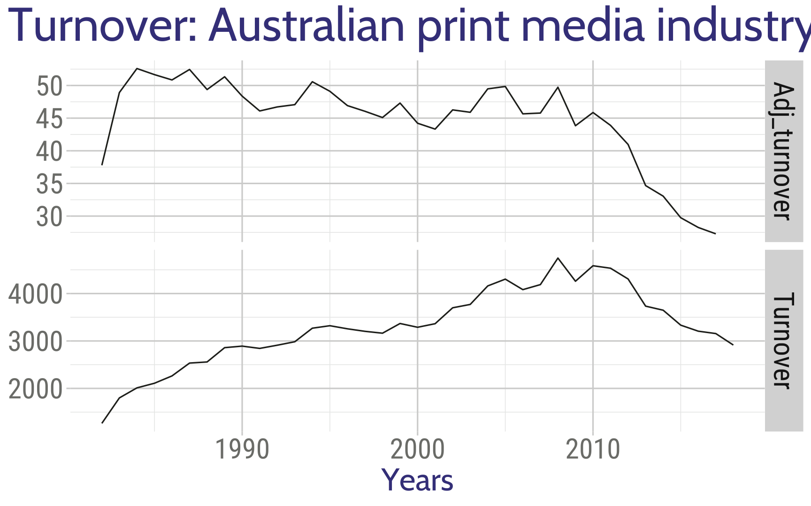
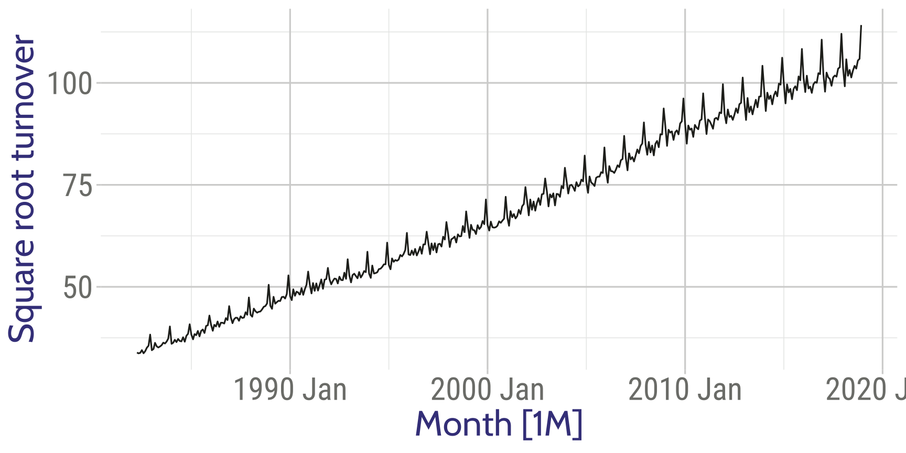
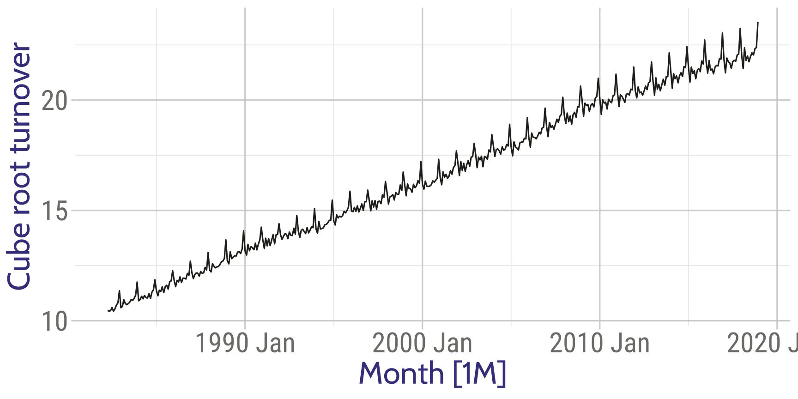
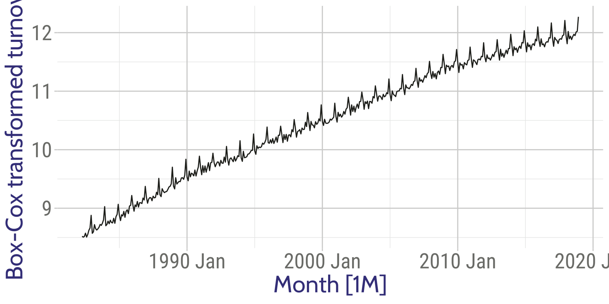
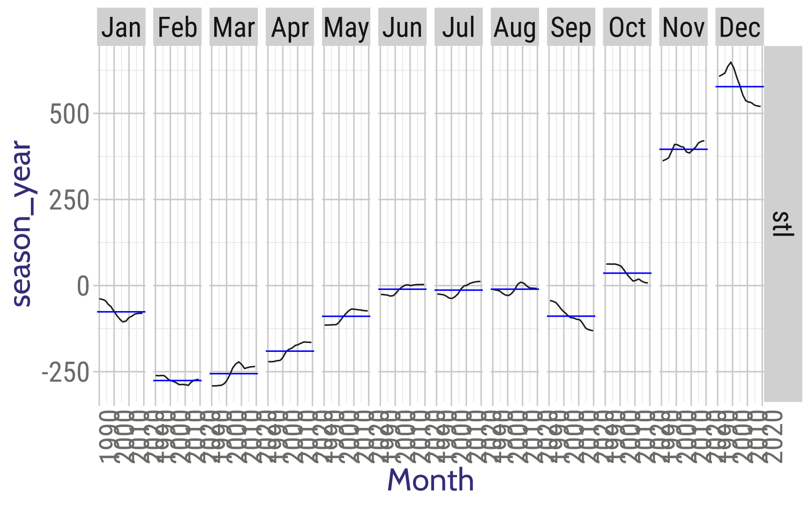

Getting started
library(tidyverse)
library(fpp3)
library(purrr)
library(gganimate)global_economy %>%
filter(Country == "Australia") %>%
autoplot(GDP) + theme_xaringan()global_economy %>%
filter(Country == "Australia") %>%
autoplot(GDP / Population) + theme_xaringan()Consider the GDP information in global_economy. Plot the GDP per capita for each country over time. Which country has the highest GDP per capita? How has this changed over time?
global_economy %>% mutate(GDPPC = GDP / Population) %>% select(Country, Year, GDPPC) %>% top_n(., 10, wt=GDPPC) ## # A tsibble: 10 x 3 [1Y]
## # Key: Country [2]
## Country Year GDPPC
## <fct> <dbl> <dbl>
## 1 Liechtenstein 2013 173528.
## 2 Liechtenstein 2014 179308.
## 3 Liechtenstein 2015 167591.
## 4 Liechtenstein 2016 164993.
## 5 Monaco 2007 167125.
## 6 Monaco 2008 180640.
## 7 Monaco 2013 172589.
## 8 Monaco 2014 185153.
## 9 Monaco 2015 163369.
## 10 Monaco 2016 168011.global_economy %>% autoplot(GDP / Population) + guides(color=FALSE) + theme_xaringan()
print_retail <- aus_retail %>%
filter(Industry == "Newspaper and book retailing") %>%
group_by(Industry) %>%
index_by(Year = year(Month)) %>%
summarise(Turnover = sum(Turnover))
aus_economy <- filter(global_economy, Code == "AUS")
print_retail %>%
left_join(aus_economy, by = "Year") %>%
mutate(Adj_turnover = Turnover / CPI) %>%
pivot_longer(c(Turnover, Adj_turnover),
names_to = "Type", values_to = "Turnover"
) %>%
ggplot(aes(x = Year, y = Turnover)) +
geom_line() +
facet_grid(vars(Type), scales = "free_y") +
xlab("Years") + ylab(NULL) +
ggtitle("Turnover: Australian print media industry") + theme_xaringan()
If the data show different variation at different levels of the series, then a transformation can be useful.
Denote original observations as \(y_1,\dots,y_n\) and transformed observations as \(w_1, \dots, w_n\).
| Transformations | |
|---|---|
| Square root | \(w_t = \sqrt{y_t}\) |
| Cube root | \(w_t = \sqrt[3]{y_t}\) |
| Logarithm | \(w_t = \log(y_t)\) |
Logarithms, in particular, are useful because they are more interpretable: changes in a log value are relative (percent) changes on the original scale.
food <- aus_retail %>%
filter(Industry == "Food retailing") %>%
summarise(Turnover = sum(Turnover))food %>% autoplot(sqrt(Turnover)) +
labs(y = "Square root turnover") + theme_xaringan()
food %>% autoplot(Turnover^(1/3)) +
labs(y = "Cube root turnover") + theme_xaringan()
food %>% autoplot(log(Turnover)) +
labs(y = "Log turnover") + theme_xaringan()food %>% autoplot(-1/Turnover) +
labs(y = "Inverse turnover") + theme_xaringan()Each of these transformations is close to a member of the family of Box-Cox transformations: \[w_t = \left\{\begin{array}{ll} \log(y_t), & \quad \lambda = 0; \\ (y_t^\lambda-1)/\lambda , & \quad \lambda \ne 0. \end{array}\right.\]
food %>%
features(Turnover, features = guerrero)## # A tibble: 1 x 1
## lambda_guerrero
## <dbl>
## 1 0.0524food %>% autoplot(box_cox(Turnover, 0.0524)) +
labs(y = "Box-Cox transformed turnover") + theme_xaringan()
logp1() can be useful for data with zeros.fable.)For the following series, find an appropriate transformation in order to stabilise the variance.
global_economyaus_livestockvic_elec.aus_productionWhy is a Box-Cox transformation unhelpful for the canadian_gas data?
Recall
Seasonal: pattern exists when a series is influenced by seasonal factors (e.g., the quarter of the year, the month, or day of the week).
The general idea is a moving window. We will set .before and .after as follows.
aus_exports <- global_economy %>%
filter(Country == "Australia") %>%
mutate(
`5-MA` = slider::slide_dbl(Exports, mean, .before = 2, .after = 2, .complete = TRUE)
)
aus_exports## # A tsibble: 58 x 10 [1Y]
## # Key: Country [1]
## Country Code Year GDP Growth CPI Imports Exports Population `5-MA`
## <fct> <fct> <dbl> <dbl> <dbl> <dbl> <dbl> <dbl> <dbl> <dbl>
## 1 Austral~ AUS 1960 1.86e10 NA 7.96 14.1 13.0 10276477 NA
## 2 Austral~ AUS 1961 1.96e10 2.49 8.14 15.0 12.4 10483000 NA
## 3 Austral~ AUS 1962 1.99e10 1.30 8.12 12.6 13.9 10742000 13.5
## 4 Austral~ AUS 1963 2.15e10 6.21 8.17 13.8 13.0 10950000 13.5
## 5 Austral~ AUS 1964 2.38e10 6.98 8.40 13.8 14.9 11167000 13.6
## 6 Austral~ AUS 1965 2.59e10 5.98 8.69 15.3 13.2 11388000 13.4
## 7 Austral~ AUS 1966 2.73e10 2.38 8.98 15.1 12.9 11651000 13.3
## 8 Austral~ AUS 1967 3.04e10 6.30 9.29 13.9 12.9 11799000 12.7
## 9 Austral~ AUS 1968 3.27e10 5.10 9.52 14.5 12.3 12009000 12.6
## 10 Austral~ AUS 1969 3.66e10 7.04 9.83 13.3 12.0 12263000 12.6
## # ... with 48 more rowsautoplot(aus_exports, Exports) +
autolayer(aus_exports, `5-MA`, color = "red") +
labs(y = "Exports (% of GDP)", title = "Total Australian exports") +
guides(colour = guide_legend(title = "series"))+ theme_xaringan()aus_exports2 <- aus_exports %>%
mutate(`2x5-MA` = slider::slide_dbl(`5-MA`, mean, .before = 1, .after = 0, .complete = TRUE)
)
aus_exports2## # A tsibble: 58 x 11 [1Y]
## # Key: Country [1]
## Country Code Year GDP Growth CPI Imports Exports Population `5-MA`
## <fct> <fct> <dbl> <dbl> <dbl> <dbl> <dbl> <dbl> <dbl> <dbl>
## 1 Austra~ AUS 1960 1.86e10 NA 7.96 14.1 13.0 10276477 NA
## 2 Austra~ AUS 1961 1.96e10 2.49 8.14 15.0 12.4 10483000 NA
## 3 Austra~ AUS 1962 1.99e10 1.30 8.12 12.6 13.9 10742000 13.5
## 4 Austra~ AUS 1963 2.15e10 6.21 8.17 13.8 13.0 10950000 13.5
## 5 Austra~ AUS 1964 2.38e10 6.98 8.40 13.8 14.9 11167000 13.6
## 6 Austra~ AUS 1965 2.59e10 5.98 8.69 15.3 13.2 11388000 13.4
## 7 Austra~ AUS 1966 2.73e10 2.38 8.98 15.1 12.9 11651000 13.3
## 8 Austra~ AUS 1967 3.04e10 6.30 9.29 13.9 12.9 11799000 12.7
## 9 Austra~ AUS 1968 3.27e10 5.10 9.52 14.5 12.3 12009000 12.6
## 10 Austra~ AUS 1969 3.66e10 7.04 9.83 13.3 12.0 12263000 12.6
## # ... with 48 more rows, and 1 more variable: `2x5-MA` <dbl>autoplot(aus_exports2, Exports) +
autolayer(aus_exports2, `5-MA`, color = "red") +
autolayer(aus_exports2, `2x5-MA`, color = "blue") +
labs(y = "Exports (% of GDP)", title = "Total Australian exports") +
guides(colour = guide_legend(title = "series")) + theme_xaringan()\[y_t = f(S_t, T_t, R_t)\]
where \(y_t=\): data at period \(t\)
\(T_t=\): trend-cycle component at period \(t\)
\(S_t=\) & seasonal component at period \(t\)
\(R_t=\) & remainder component at period \(t\)
Additive decomposition: \(y_t = S_t + T_t + R_t.\)
Multiplicative decomposition: \(y_t = S_t \times T_t \times R_t.\)
\[y_t = S_t \times T_t \times E_t \quad\Rightarrow\quad \log y_t = \log S_t + \log T_t + \log R_t.\]
us_retail_employment <- us_employment %>%
filter(year(Month) >= 1990, Title == "Retail Trade") %>%
select(-Series_ID)
us_retail_employment## # A tsibble: 357 x 3 [1M]
## Month Title Employed
## <mth> <chr> <dbl>
## 1 1990 Jan Retail Trade 13256.
## 2 1990 Feb Retail Trade 12966.
## 3 1990 Mar Retail Trade 12938.
## 4 1990 Apr Retail Trade 13012.
## 5 1990 May Retail Trade 13108.
## 6 1990 Jun Retail Trade 13183.
## 7 1990 Jul Retail Trade 13170.
## 8 1990 Aug Retail Trade 13160.
## 9 1990 Sep Retail Trade 13113.
## 10 1990 Oct Retail Trade 13185.
## # ... with 347 more rowsus_retail_employment %>%
autoplot(Employed) +
xlab("Year") + ylab("Persons (thousands)") +
ggtitle("Total employment in US retail") + theme_xaringan()USREDC <- us_retail_employment %>%
model(classical_decomposition(Employed, type = "additive")) %>%
components()
USREDC## # A dable: 357 x 7 [1M]
## # Key: .model [1]
## # Classical Decomposition: Employed = trend + seasonal + random
## .model Month Employed trend seasonal random season_adjust
## <chr> <mth> <dbl> <dbl> <dbl> <dbl> <dbl>
## 1 "classical_decomposit~ 1990 Jan 13256. NA -75.5 NA 13331.
## 2 "classical_decomposit~ 1990 Feb 12966. NA -273. NA 13239.
## 3 "classical_decomposit~ 1990 Mar 12938. NA -253. NA 13191.
## 4 "classical_decomposit~ 1990 Apr 13012. NA -190. NA 13203.
## 5 "classical_decomposit~ 1990 May 13108. NA -88.9 NA 13197.
## 6 "classical_decomposit~ 1990 Jun 13183. NA -10.4 NA 13193.
## 7 "classical_decomposit~ 1990 Jul 13170. 13178. -13.3 5.65 13183.
## 8 "classical_decomposit~ 1990 Aug 13160. 13161. -9.99 8.80 13169.
## 9 "classical_decomposit~ 1990 Sep 13113. 13141. -87.4 59.9 13201.
## 10 "classical_decomposit~ 1990 Oct 13185. 13117. 34.6 33.8 13151.
## # ... with 347 more rowsautoplot(USREDC) +
labs(title = "Classical additive decomposition of total US retail employment") + theme_xaringan()us_retail_employment %>%
model(stl = STL(Employed))## # A mable: 1 x 1
## stl
## <model>
## 1 <STL>dcmp <- us_retail_employment %>%
model(stl = STL(Employed))
components(dcmp)## # A dable: 357 x 7 [1M]
## # Key: .model [1]
## # STL Decomposition: Employed = trend + season_year + remainder
## .model Month Employed trend season_year remainder season_adjust
## <chr> <mth> <dbl> <dbl> <dbl> <dbl> <dbl>
## 1 stl 1990 Jan 13256. 13291. -38.1 3.08 13294.
## 2 stl 1990 Feb 12966. 13272. -261. -44.2 13227.
## 3 stl 1990 Mar 12938. 13252. -291. -23.0 13229.
## 4 stl 1990 Apr 13012. 13233. -221. 0.0892 13233.
## 5 stl 1990 May 13108. 13213. -115. 9.98 13223.
## 6 stl 1990 Jun 13183. 13193. -25.6 15.7 13208.
## 7 stl 1990 Jul 13170. 13173. -24.4 22.0 13194.
## 8 stl 1990 Aug 13160. 13152. -11.8 19.5 13171.
## 9 stl 1990 Sep 13113. 13131. -43.4 25.7 13157.
## 10 stl 1990 Oct 13185. 13110. 62.5 12.3 13123.
## # ... with 347 more rowsus_retail_employment %>%
autoplot(Employed, color='gray') +
autolayer(components(dcmp), trend, color='red') +
xlab("Year") + ylab("Persons (thousands)") +
ggtitle("Total employment in US retail") + theme_xaringan()components(dcmp) %>% autoplot() + xlab("Year") + theme_xaringan()components(dcmp) %>% gg_subseries(season_year) + theme_xaringan()
us_retail_employment %>%
autoplot(Employed, color='gray') +
autolayer(components(dcmp), season_adjust, color='blue') +
xlab("Year") + ylab("Persons (thousands)") +
ggtitle("Total employment in US retail") + theme_xaringan()Advantages
Disadvantages
X11_dcmp <- us_retail_employment %>%
model(seats = feasts:::X11(Employed, type = "additive")) %>%
components()
X11_dcmp## # A dable: 357 x 7 [1M]
## # Key: .model [1]
## # X11 Decomposition: Employed = trend + seasonal + irregular
## .model Month Employed trend seasonal irregular season_adjust
## <chr> <mth> <dbl> <dbl> <dbl> <dbl> <dbl>
## 1 seats 1990 Jan 13256. 13260. -20.5 16.0 13276.
## 2 seats 1990 Feb 12966. 13248. -253. -29.1 13219.
## 3 seats 1990 Mar 12938. 13237. -291. -7.47 13229.
## 4 seats 1990 Apr 13012. 13227. -217. 2.31 13229.
## 5 seats 1990 May 13108. 13217. -111. 2.40 13219.
## 6 seats 1990 Jun 13183. 13204. -21.0 -0.192 13204.
## 7 seats 1990 Jul 13170. 13186. -21.1 5.09 13191.
## 8 seats 1990 Aug 13160. 13167. -2.20 -5.18 13162.
## 9 seats 1990 Sep 13113. 13150. -33.0 -3.86 13146.
## 10 seats 1990 Oct 13185. 13136. 52.4 -2.87 13133.
## # ... with 347 more rowsautoplot(X11_dcmp) + theme_xaringan()Advantages
Disadvantages
seats_dcmp <- us_retail_employment %>%
model(seats = feasts:::SEATS(Employed)) %>%
components()
seats_dcmp## # A dable: 357 x 7 [1M]
## # Key: .model [1]
## # X-13ARIMA-SEATS Decomposition: Employed = trend * seasonal * irregular
## .model Month Employed trend seasonal irregular season_adjust
## <chr> <mth> <dbl> <dbl> <dbl> <dbl> <dbl>
## 1 seats 1990 Jan 13256. 13265. 0.999 1.00 13269.
## 2 seats 1990 Feb 12966. 13244. 0.980 0.999 13235.
## 3 seats 1990 Mar 12938. 13236. 0.977 1.00 13238.
## 4 seats 1990 Apr 13012. 13232. 0.983 1.00 13234.
## 5 seats 1990 May 13108. 13221. 0.991 1.00 13222.
## 6 seats 1990 Jun 13183. 13205. 0.998 1.00 13204.
## 7 seats 1990 Jul 13170. 13186. 0.999 1.00 13189.
## 8 seats 1990 Aug 13160. 13165. 1.00 1.00 13162.
## 9 seats 1990 Sep 13113. 13145. 0.998 1.00 13145.
## 10 seats 1990 Oct 13185. 13129. 1.00 1.00 13126.
## # ... with 347 more rowsautoplot(seats_dcmp) +
labs(title = "SEATS decomposition of total US retail employment") + theme_xaringan()us_retail_employment %>%
model(STL(Employed ~ season(window=9), robust=TRUE)) %>%
components() %>% autoplot() +
ggtitle("STL decomposition: US retail employment")us_retail_employment %>%
model(STL(Employed ~ season(window=5))) %>%
components()
us_retail_employment %>%
model(STL(Employed ~ trend(window=15) +
season(window="periodic"),
robust = TRUE)
) %>% components()trend(window = ?) controls wiggliness of trend component.season(window = ?) controls variation on seasonal component.season(window = 'periodic') is equivalent to an infinite window.us_retail_employment %>%
model(STL(Employed)) %>%
components() %>%
autoplot()STL() chooses season(window=13) by defaultwindow = 13window = nextodd(ceiling((1.5*period)/(1-(1.5/s.window)))employed## # A tsibble: 440 x 4 [1M]
## Time Month Year Employed
## <mth> <ord> <dbl> <dbl>
## 1 1978 Feb Feb 1978 5986.
## 2 1978 Mar Mar 1978 6041.
## 3 1978 Apr Apr 1978 6054.
## 4 1978 May May 1978 6038.
## 5 1978 Jun Jun 1978 6031.
## 6 1978 Jul Jul 1978 6036.
## 7 1978 Aug Aug 1978 6005.
## 8 1978 Sep Sep 1978 6024.
## 9 1978 Oct Oct 1978 6046.
## 10 1978 Nov Nov 1978 6034.
## # ... with 430 more rowsemployed %>%
autoplot(Employed) +
ggtitle("Total employed") + ylab("Thousands") + xlab("Year")employed %>%
filter(Year >= 2005) %>%
autoplot(Employed) +
ggtitle("Total employed") + ylab("Thousands") + xlab("Year")employed %>%
filter(Year >= 2005) %>%
gg_season(Employed, label = "right") +
ggtitle("Total employed") + ylab("Thousands")employed %>%
mutate(diff = difference(Employed)) %>%
filter(Month == "Sep") %>%
ggplot(aes(y = diff, x = 1)) +
geom_boxplot() + coord_flip() +
ggtitle("Sep - Aug: total employed") +
xlab("") + ylab("Thousands") +
scale_x_continuous(breaks = NULL, labels = NULL)dcmp <- employed %>%
filter(Year >= 2005) %>%
model(stl = STL(Employed ~ season(window = 11), robust = TRUE))
components(dcmp) %>% autoplot()components(dcmp) %>%
filter(year(Time) == 2013) %>%
gg_season(season_year) +
ggtitle("Seasonal component") +
guides(colour = "none")components(dcmp) %>%
as_tsibble() %>%
autoplot(season_adjust)